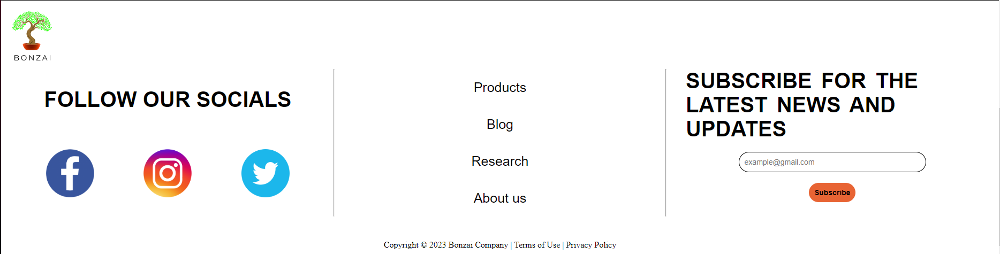
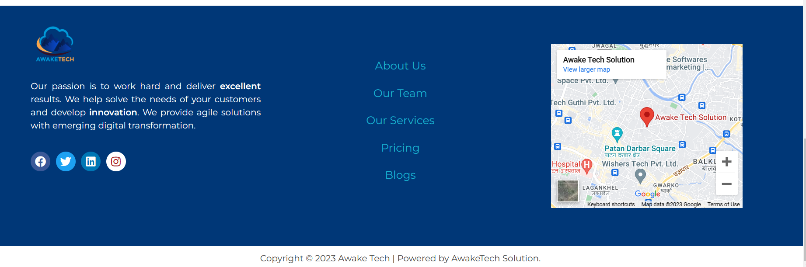

Website1

COMPARISION OF NAVIGATION BAR OF OUR WEBSITE AND DARAZ :
well the navigation bar is something that provide links for the information related to that particular website. Daraz is the online shopping website and it even comes as applications in mobile phone. It is quiet popular in nepal and it is nepalsese website. well lets get to the point and talk about the comparision of navigation bar between our website and deraz.Similarites
The similarities is that whenever we touch the link given in the navigation bar it gets highlighted. The another similarities is that postion of navigation bar is at top some website put their navigation bar at the bottom or at the leftside for example we have google they have kept there navigation bar at the bottom. Perhaps i dont think we have any other similarities cause any more similarites may lead to copyright.Disimilarities
Now lets talk about the dismilarities: First dissimilarities is that Daraz has provided the language changer for the website english and nepali and we haven't provide the language changer. The link provided in the navigation are different. The colors used for navigation bar is also different . Deraz has also provided the offer rate(discount%) in there navigation bar as where we provided the offer rate(discount%) in the product page.
Website2


COMPARISION OF PRODUCT PAGE OF OUR WEBSITE AND EASTERNLEAF:
product page means where we keep the information or selling price of products. As I don't have much information about the origin of this website. This website is about the plants, it actually sells almost all types of plants, gardening tools and elements like soil and meds for the plants are also been founded. While our website is only focused on the bonsai plant. Now lets talk about the similarities of and disimilarities.Similarities
The first similarities is that just like us even they are giving discounts in our product. Another similarities is they even have bonsai plant in their products. otherwise no smilarities left.Disimilarities
Now lets talk about the disimilarities we have; Unlike our product page they have different kind of plants in there product as our products are only bosai plants and website is also related to bonsai. They have given the description of every products, While we have given the brief description for the only one products and for the other products we have only give the price and offer rate(discount price). They have given only 10% discount for only some products, while we have given 15% discount for all the products avaible.
Website3


COMPARISION OF FOOTER OF OUR WEBSITE AND AWAKETECHSOLUTION:
First let me tell you about the footer. Footer is the information about the website which is typically given at the bottom of the website as in the form of additonal link or descripriton and copyright notice. This website helps the person in there startup and business in efficeint way throug the digital engineering. They provide you the team of lots of experince. Now lets come to the point and talk about the footer of there websites and ours similarities and disimilarities.Similarities
The similarities we have, just like every footer the format is same the logo, additional link about the website which is almost usual in any other websites too.Disimilarities
The Disimilarities we have techsolution has provide little short description about there website in footer while we prodied all and brief description in our links. As we talk of link they are even avaible in linkedin, while we are only limited to instagaram, facebook and tweeter.In our footer we have provided the subscription for the latest update and neews for our products. While they haven't provided such thing for any latest update instead they have provided there location(screenshot of google map).
Website4


COMPARISION OF BLOG PAGE OF OUR WEBSITE AND Bonsaiempire :
Blog page is used for the website information,opinion and content of the website for the website visitor. unlike us bonsaiempire is doesn't sell products in there website while our website is commercial for bonsai. This website provide only information about the bonsai plant while our website sells the products./Similarites
Now lets come to the point as mention in subtopic similarites of the blog pages for our as our website is about bonsai so it is usual similarity that we have the information about bonsai plant.Disimilaritie
Now lets talk about the disimilarities the first dismilarities is unlike bonsai empire we have also given information about how present techonlogy is making positive,negative impact and how does it effect in the selling of bonsai plant, while bonsaiempire has only given content for the different types of bonsai plant.
Website5